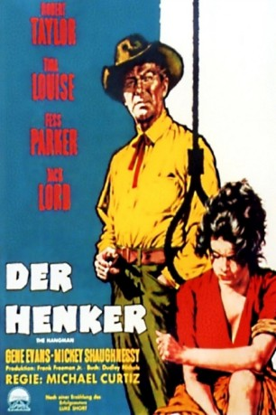
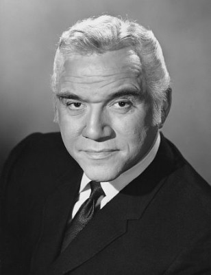
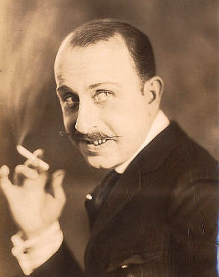
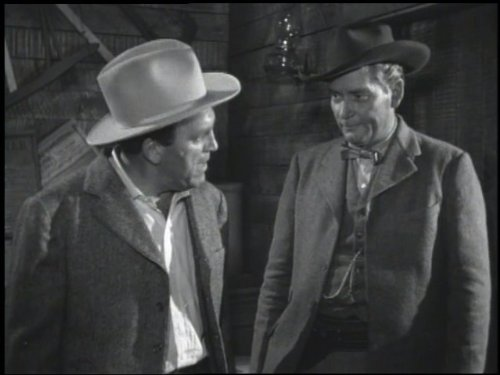
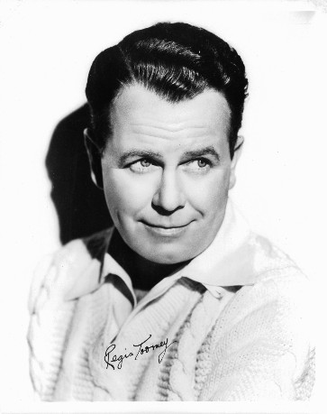

#6722 Der Henker
Alternativ: The Hangman
 
 IMDB-Wertung: 6.7 / 10
IMDB-Wertung: 6.7 / 10  Metascore: 0
Metascore: 0 
Bundesmarshall Mackenzie „Mac“ Bovard(Robert Taylor) mit dem Spitznamen "Der Henker" hat bereits drei der vier Gesetzlosen, die einen bewaffneten Raubüberfall begangen haben, dingfest gemacht -nun fehlt ihm nur noch der vierte Mann -John Butterfield (Jack Lord)! Um ihn zu stellen, folgt er ihm in eine kleine Stadt namens North Creek. Dort plant er, den Flüchtigen in einem kleinen Hotel zu schnappen. Doch es kommt alles ganz anders…
Jahr: 1959
Dauer: 86 Minuten
FSK: 12
Land: USA Studio: Paramount PicturesTonspuren:
Untertitel:
Auflösung: 1080p (1920x1080) Größe: 8140 MB
Genre: Western
Regisseur: Michael Curtiz
Drehbuch: Dudley Nichols
Soundtrack:
Darsteller:
 Robert Taylor als Mackenzie Bovard
Robert Taylor als Mackenzie Bovard- Tina Louise als Selah Jennison
 Fess Parker als Sheriff Buck Weston
Fess Parker als Sheriff Buck Weston- Jack Lord als Johnny Bishop
 Gene Evans als Big Murph Murphy
Gene Evans als Big Murph Murphy Mickey Shaughnessy als Al Cruse
Mickey Shaughnessy als Al Cruse James Westerfield als Herb Loftus
James Westerfield als Herb Loftus- Mabel Albertson als Amy Hopkins
- Betty Lynn als Molly - Waitress
-  Lorne Greene als Marshal Clum Cummings
 Robert Adler als Stagecoach Driver , uncredited
Robert Adler als Stagecoach Driver , uncredited Fred Aldrich als Yard Worker , uncredited
Fred Aldrich als Yard Worker , uncredited- Forest Burns als Yard Worker , uncredited
 Chuck Hamilton als Yard Worker , uncredited
Chuck Hamilton als Yard Worker , uncredited-  Stuart Holmes als Hotel Guest , uncredited
 Nolan Leary als Husband , uncredited
Nolan Leary als Husband , uncredited Nelson Leigh als Col. Hammond , uncredited
Nelson Leigh als Col. Hammond , uncredited Frank Mills als Yard Worker , uncredited
Frank Mills als Yard Worker , uncredited-  Frank Richards als Zimmerman , uncredited
 George Sowards als Stage Driver , uncredited
George Sowards als Stage Driver , uncredited-  Regis Toomey als Orderly , uncredited
- Sam Wolfe als Bartender , uncredited
- Shirley Harmer als Kitty Bishop
- Jose Gonzales-Gonzales als Pedro Alonso
- Richard Collier als Hotel Clerk
- Abdullah Abbas als Blacksmith , uncredited
- Rex Andrews als Bellhop , uncredited
- Nick Borgani als Townsman , uncredited
- Dorothy Crehan als Wife , uncredited
- Joseph Hamilton als Husband , uncredited
- James Hope als Orderly , uncredited
- Billy McCoy als Townsman , uncredited
- Paul Salata als Ben - Teamster , uncredited
- Clint Sharp als Townsman , uncredited
- Sara Taft als Wife , uncredited
Datei: X:\HD-Western-1900-1959\Henker, Der (1959, FSK12, 1920x1080).mkv seit 09.08.2017
Festplatte: HD Eastern+Western
 Es gibt insgesamt 98 Filme in der Gruppe 'HD-Western-1900-1959'
Es gibt insgesamt 98 Filme in der Gruppe 'HD-Western-1900-1959'